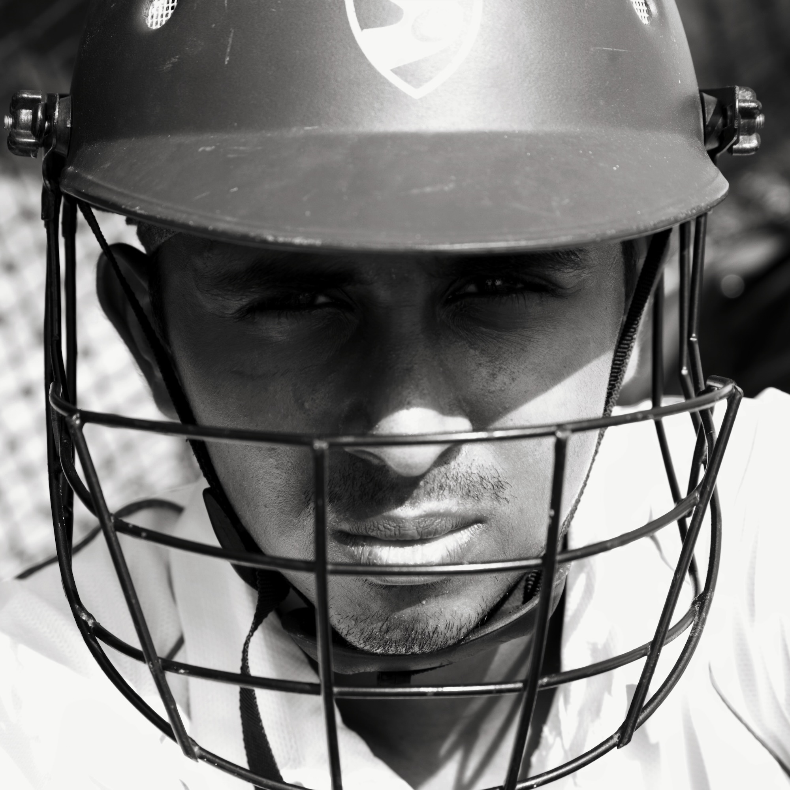

I am Anirudh from Chennai, pursuing my postgraduate studies in the Department of Computer Science at the Indian Institute of Technology Madras. I am associated with the PACE Lab where I conduct my research under the guidance of Professor Rupesh Nasre. My interests revolve around scalable and high-performance computing.
Previously, I completed my bachelor’s degree in Computer Science from SSN College of Engineering and worked as a Software Engineer at Everstage Technologies. I have contributed to multiple projects involving data processing pipelines, ETL workflows, and integrations with external applications.
Beyond my academic activities, I am a cricket enthusiast with a love for cinema and music spanning different genres. In my free time, I explore the cultural and intellectual heritage of Bharat with a modern outlook. I also enjoy cooking and experimenting with a variety of recipes and culinary techniques.